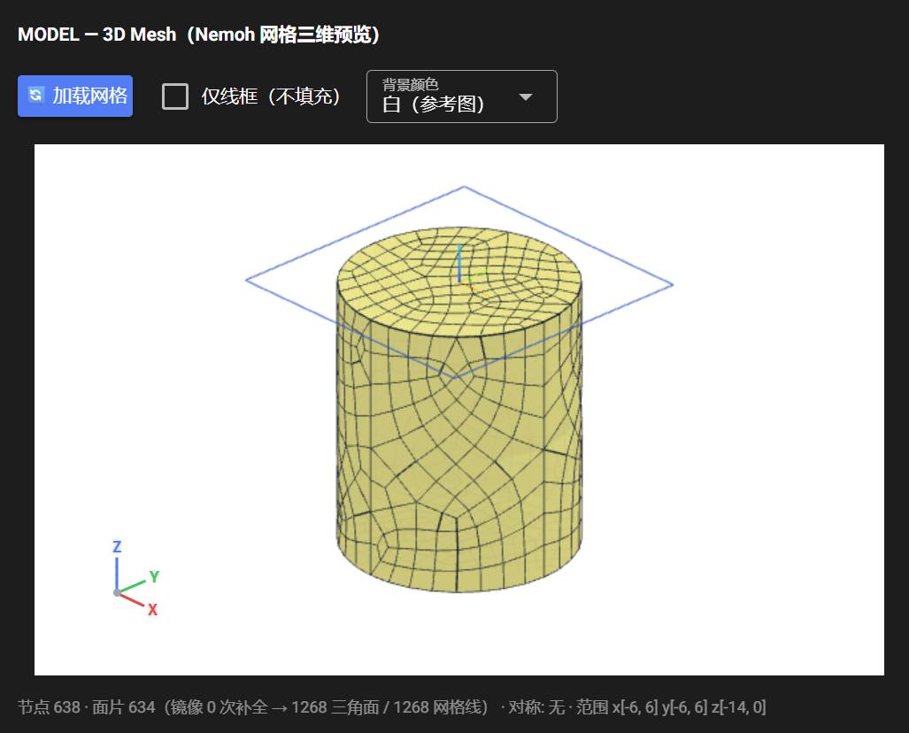
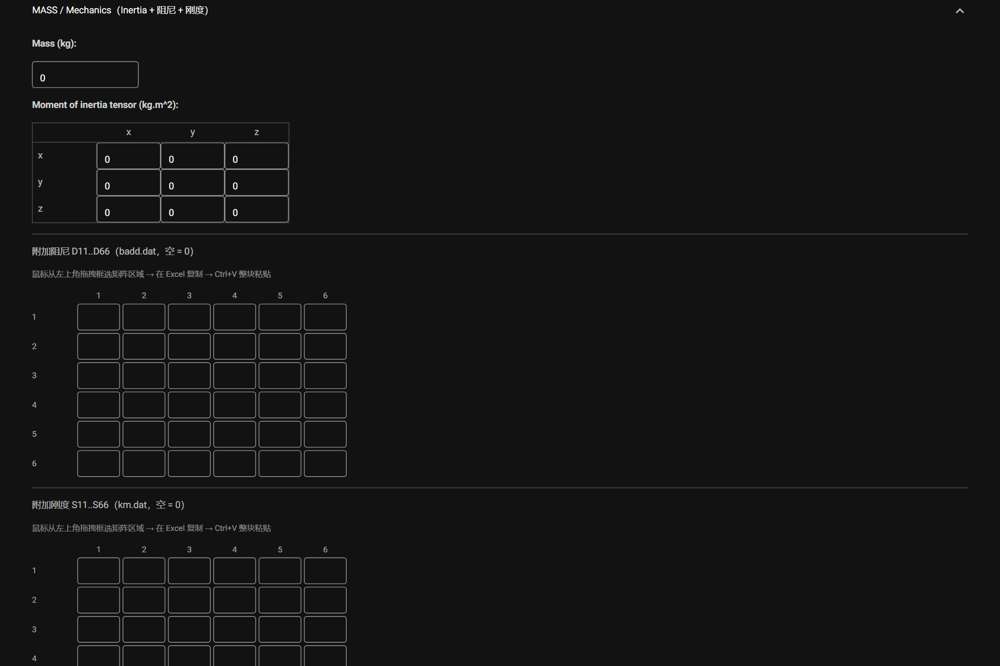
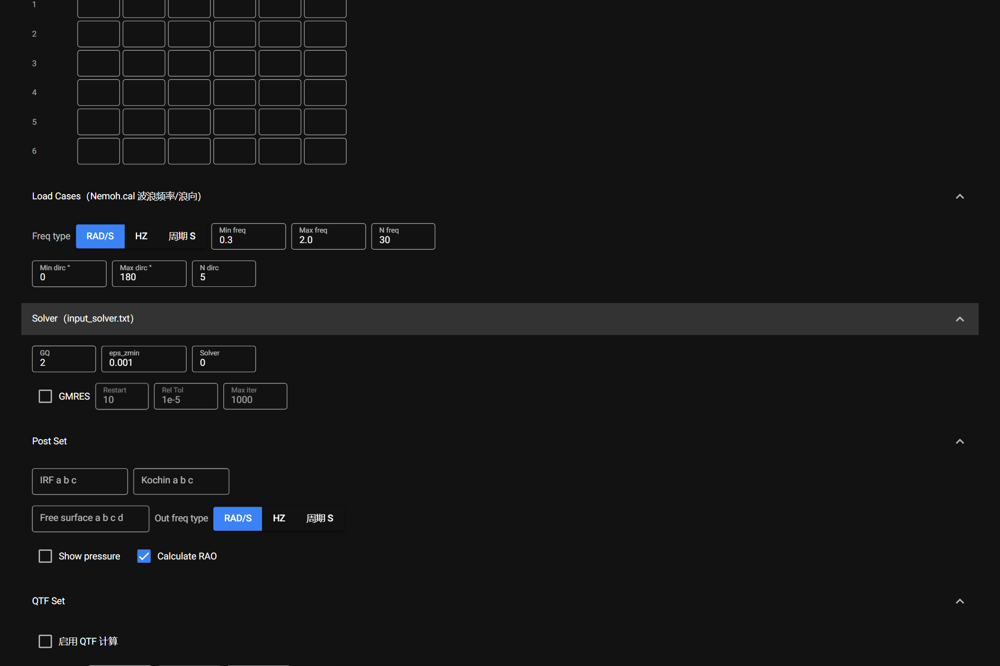

Interface Overview and Workflow
The page is laid out top to bottom as: Model area → Environment / measure points → HYST → 3D mesh preview → Body set / MASS → Load Cases / Solver / Post Set / QTF Set → Run buttons and log → Results → QTF Results.

1. Model management (top)
- Model drop-down — select an existing directory under
db/; its parameters load automatically. - New model name + 新建 — create a model directory (English name, no spaces or special characters).
- 删除 — delete the selected model directory (confirmation dialog; blocked while a run is in progress).
Naming rule: the mesh file must match the model name, i.e.
db/<model>/<model>.dat. Names are case-sensitive; avoid@ # spaceand similar characters.
2. Environment
Rho kg/m³ (water density), Gravity m/s², Water depth m, Bodies (fixed at 1 in this version).
3. Wave measure points
- One
x ypair per row; select and paste two Excel columns directly — rows are appended automatically. - 点数 + 生成 generates that many rows in one click (keeping existing rows);
+ 行 / 删行add or remove a single row. - Written to the
wmpointsblock ofNemoh.cal; leave the default0 0when not needed (no extra points are written).
4. HYST — Hydrostatics
Chain: bin/preProc.exe → bin/hydrosCal.exe.
- ▶ RUN HYST — rebuilds
mesh/(previous directory renamed to*_bak_<timestamp>), copies the mesh, fixes the panel counters, then runs. - SUMMARY — summarises
mesh/Hydrostatics.datintosummary_hydrosta.txt: centre of buoyancy XB/YB/ZB, displacement, waterplane area and mass. Rho / Gravityare shared with the Environment panel.
5. MODEL — 3D Mesh preview

- 加载网格 — parses
db/<model>/<model>.datand renders it; the symmetry flag in the first line is used to mirror a half model automatically. - 仅线框（不填充） / 背景颜色 toggle the display style.
- Node count, panel count (after mirroring), symmetry and bounding box are printed under the view.
6. Body set — degrees of freedom
Select the DOFs to solve: Surge / Sway / Heave / Roll / Pitch / Yaw. Unselected DOFs are excluded from the radiation problem.
7. MASS / Mechanics

- Mass (kg) — structural mass.
- Moment of inertia tensor (kg·m²) — 3×3.
- Added damping D11..D66 (badd.dat) and added stiffness S11..S66 (km.dat) — 6×6 matrices; paste a block straight from Excel.
- Leaving everything at 0 lets the program derive the values from the hydrostatics results (recommended unless extra damping or stiffness is required).
8. Load Cases / Solver / Post Set / QTF Set

These four collapsible panels map to the corresponding sections of Nemoh.cal and input_solver.txt; every field is described in Parameter Reference.
9. Run buttons and log

- SAVE .CAL — writes
Nemoh.cal(required before BEM / QTF). - SAVE MECHANICS — writes
input_solver.txtand the four matrices underMechanics/. - ▶ RUN BEM / ▶ RUN QTF — run in the background; the log below streams in real time (one line per problem).
- Before each run the old
results/,QTFPreprocOut/, … are renamed to*_bak_<timestamp>; no historical result is ever deleted.
10. Results / QTF Results
See Results.
Key notes
- File naming — model and project files must share the same name (case-sensitive).
- Order of operations — HYST (optional) → SAVE .CAL → SAVE MECHANICS → RUN BEM → RUN QTF.
- RAO curves — tick
Calculate RAOin Post Set after saving MASS parameters, then re-run BEM. - QTF — QTF Set must be configured and the first-order problem (BVP + RAO) solved first.
Recommended practice
- Keep the default solver settings unless there is a specific reason to change them.
- Check mesh quality and symmetry in the 3D preview before production runs.
- Back up
db/regularly (automatic backups only cover run-time snapshots). - Consult the Nemoh manual for advanced settings.